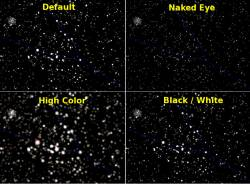
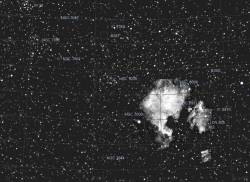
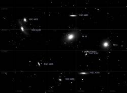
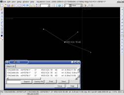

 Amélioration de l'affichage des étoiles
Les étoiles peuvent maintenant être affichée avec une méthode paramétrable pour obtenir le meilleur résultat selon votre écran ou vos préférences personnelles.
Vos pouvez choisir de grosses ou petites étoiles, beaucoup ou peu de contraste entre les magnitudes, une image colorisée ou en niveaux de gris.
Quatre options par défaut peuvent servir de point de départ.
Utilisez le menu Configuration - Display pour changer ces options
Cette méthode utilise l'antialias pour obtenir une position des étoiles plus fine que le pixel.
Merci à John Valentine pour sa contribution a cette fonction.
base de donnée d'images
Le programme peu maintenant afficher un nombre quelconque d'images au format FITS avec des informations WCS.
Trois options sont disponibles:
 Pour toutes ces options il est necessaire d'avoir installé la base de donnée MySQL.
Si sela n'est pas encore fait, installez le paquet MySQL et allez dans Setup - Configuration - System pour créer la base de donnée.
Les options par défaut conviennent pour une nouvelle installation, appuyez simplement sur le bouton “Create Database”.
Après l'installation des images allez dans Setup - Configuration - Pictures - Object et appusez sur “Scan Directory” pour enregistrer les images dans le programme.
Cette opération doit être répetée a chaque modification des images.
 Etoiles doubles et multiples
Le programme utilise une méthode plus précise pour représenter les étoiles multiples.
Quand l'échelle de la carte est suffisante pour séparer les composants, une ligne est dessinée à la position exacte du second composant.
Pour les étoiles multiples chaque paire du catalogue WDS est représentée.
Il faut mettre a jours le catalogue WDS à la dernière version pour profiter de la grosse amélioration de la position des étoiles.
Autres modifications
{kind=link}
{kind=link}
{kind=link}
{kind=link}